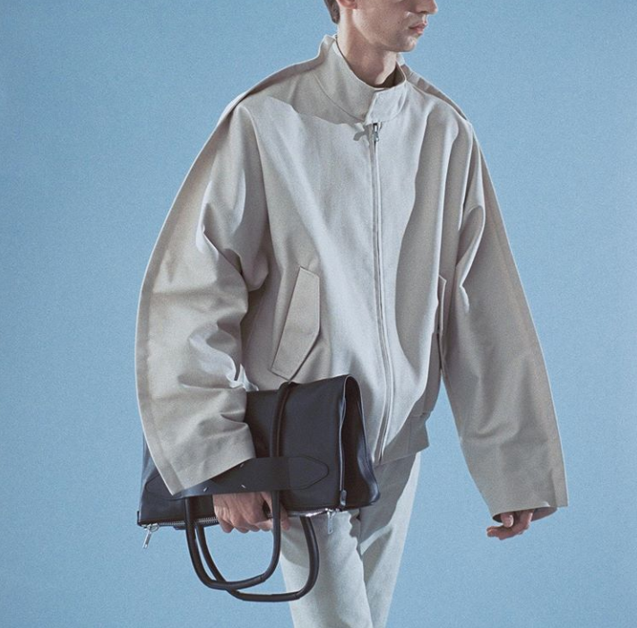
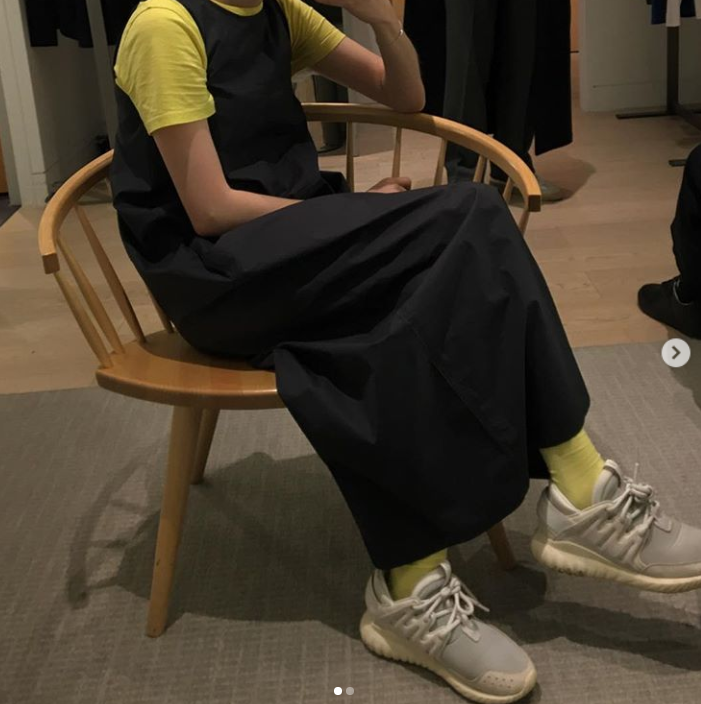

모던은 주로 옷의 무늬가 단촐하고 단정한것을 특징으로 한다. 마치 백자와 같은 단순함에서 오는 미라 할수 있겠다. 하지만 난 가장 베이직한 것만이 주가 되지는 않고, 기하학적인 독특한 특징이 있는 옷을 좋아한다. 이러한 기하학적인 특징이 가장 아름답게 표현된 브랜드는 메종 마르지엘라이고 조금더 캐주얼한 분위기를 내는 것이 코스이다. 또한 기하학적이지는 않지만 모던하면서도 캐주얼한 이미지를 가지는 것은 아페세와 아크네스튜디오이다. 아페쎄의 경우는 아크네 스튜디오에 피해서 더욱 캐주얼하다.
먼가 평범해 보이지만 조금씩 다른 디테일을 좋아한다.
밋밋해보이지만 독특한 색조합으로 포인트를 주는 것을 좋아한다. 세연이의 스타일중 70% 정도를 차지하고 있다고 보면 된다.